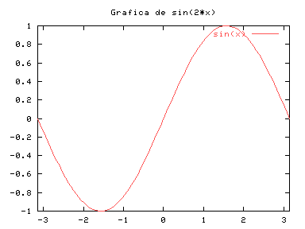
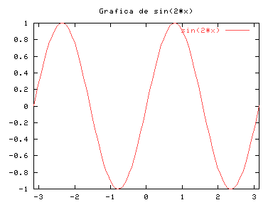

| Herramientas en GNU/Linux para estudiantes universitarios: | ||
|---|---|---|
| Anterior | Capítulo 2. Sintaxis de gnuplot | Siguiente |
Supongamos que queremos obtener una gráfica de sin(x). Entonces deberíamos escribir lo siguiente:
gnuplot> set title "Grafica de sin(x)"
gnuplot> plot [-pi:pi] sin(x)
|

Esto hará aparecer otra ventana con la gráfica. Si nos equivocamos o queremos realizar alguna modificación podemos utilizar los cursores para movernos por el historial (arriba o abajo) y desplazar el cursor al lugar donde queremos hacer el cambio (izquierda o derecha). De esta manera es muy cómodo obtener la gráfica de sin(2*x).
gnuplot> set title "Grafica de sin(2*x)"
gnuplot> plot [-pi:pi] sin(2*x)
|
